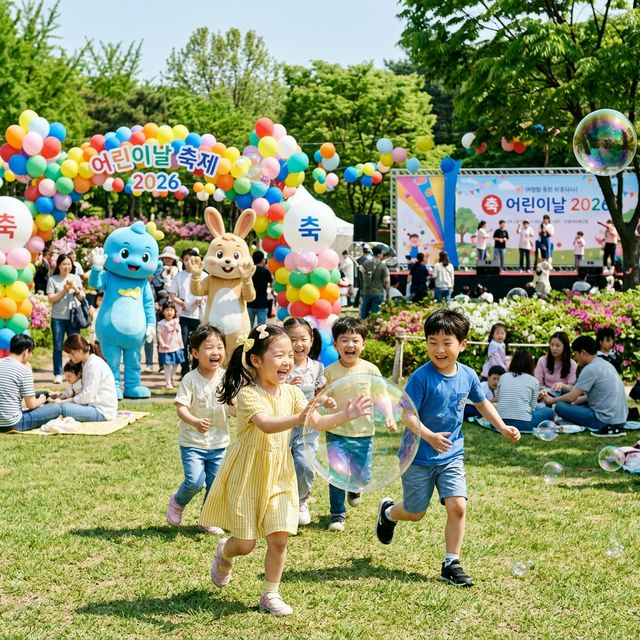
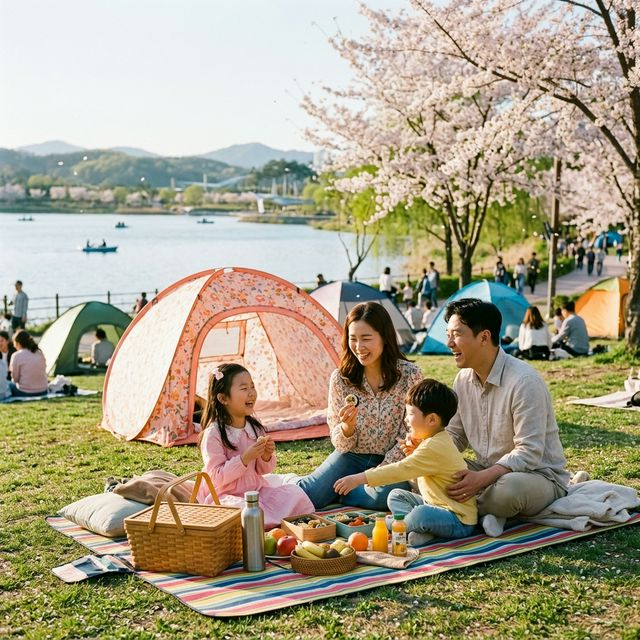
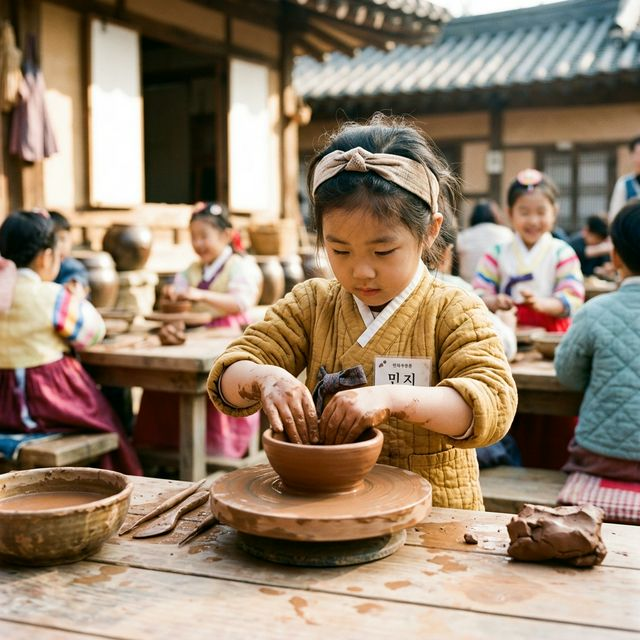

매년 어린이날 시즌 연천 전곡리 유적에서는 타임머신을 타고 수만 년 전으로 날아가는 듯한 연천 구석기 축제가 개최됩니다. 이곳은 단순한 전시 위주의 박물관이 아닌, 광활한
잔디밭 전체가 하나의 거대한 체험형 테마파크로 변신하는데요. 특히 2026년에는 AR(증강현실) 기술을 활용한 '매머드 사냥 체험' 등 더욱 업그레이드된 프로그램이 준비되어 있어 초등학생 자녀를 둔
부모님들께 강력 추천합니다.
가장 인기 있는 코스는 역시 '구석기 바비큐'입니다. 1미터가 넘는 긴 나뭇가지에 생고기를 꿰어 대형 화덕 주변에서 직접 구워 먹는 재미는 아이들에게 평생 잊지 못할
기억이 됩니다. 또한 구석기 의상을 빌려 입고 움집 앞에서 찍는 사진은 SNS에서도 큰 주목을 받을 수 있습니다. 팁을 드리자면, 행사장이 워낙 넓어 그늘을 찾기 힘들 수 있으니 휴대용
양크 햇이나 미니 선풍기를 꼭 챙기세요. 주차는 예구마을 임시 주차장이나 전곡항 주변을 이용 하신 뒤 무료 셔틀버스를 탑승하는 것이 가장 빠르고 쾌적한 이동 방법입니다.

비눗방울과 웃음소리가 가득한 2026년 어린이날 공원 축제 현장 — AI 제작 이미지
우리 아이에게 전통문화의 소중함을 일깨워주고 싶다면 용인 한국민속촌은 최고의 선택입니다. 5월 어린이날 기간에는 특히 민속촌의 꽃이라 불리는 '웰컴 투 조선' 축제가
한창입니다. 속촌의 장점은 연기력이 뛰어난 조선 시대 캐릭터들과 직접 대화하고 게임을 즐길 수 있다는 점인데요. 사또의 생일잔치나 거지들의 거리 공연 등 아이들의 눈높이에 맞춘 코믹한 극들이 곳곳에서
펼쳐집니다.
관람 외에도 전통 민속놀이 체험 존에서는 제기차기, 팽이치기, 떡메치기 등을 무료 혹은 저렴한 비용으로 체험할 수 있습니다. 팁을 드리자면, 어린이날 당일 한복을 입고
방문하는 아이들에게는 입장료를 파격적으로 할인해 주거나 작은 기념품을 증정하는 이벤트가 상시 진행되니 예쁜 생활 한복을 미리 준비해 보세요. 민속촌 내 식당가가 매우 붐빌 수 있으므로, 입구 근처의
장터보다는 조금 일찍 자리를 잡아 국밥이나 파전을 주문하시거나 간단한 간식거리를 배낭에 챙겨 가시는 것이 체력 방전을 막는 지름길입니다.
2026년 어린이날을 기점으로 광명스피돔은 거대한 실내 놀이터로 변신합니다. 이번에 새롭게 개최되는 '어린이 바둑대회'는 바둑 꿈나무들에게 성취감을 줄 수 있는 좋은
기회인데요. 대회 참가자가 아니더라도 일반 가족 방문객을 위한 '마인드 스포츠 체험 존'이 무료로 개방됩니다. 바둑 체험 외에도 체스, 오목, 보드게임 등 아이들의 집중력을 높여줄 수 있는 다양한
콘텐츠가 준비되어 있습니다.
가장 큰 매력은 기상 상황에 상관없이 즐길 수 있는 쾌적한 실내 공간이라는 점입니다. 비가 오거나 황사가 심한 날씨에도 아이들이 마음껏 뛰어놀 수 있도록 대형 에어바운스와
페이스 페인팅 부스가 운영됩니다. 팁을 드리자면, 스피돔 주차장은 입구 쪽보다는 외곽 주차장을 이용하시는 것이 출차 시 훨씬 빠릅니다. 또한 도보 10분 거리에 있는
광명동굴과 연계하여 방문하신다면, 5월의 무더위를 잠시 식힐 수 있는 완벽한 당일치기 남부권 나들이 코스가 완성됩니다.

넓은 호수를 배경으로 여유로운 피크닉을 즐기는 가족들의 모습 — AI 제작 이미지
경기도 북부권에서 가장 핫한 키즈 명소를 꼽으라면 단연 경기북부 어린이박물관입니다. 이곳의 킬러 콘텐츠인 '클라이머존'은 거대한 초식공룡 브라키오사우루스의 뱃속을 탐험하듯
타고 올라가는 대형 놀이 기구인데요. 아이들의 성취감과 모험심을 길러주기에 이만한 곳이 없습니다. 5월 어린이날 주간에는 박물관 내부는 물론 외부 광장에서도 벼룩시장과 어린이 요리 교실 등 다채로운
특별 프로그램이 성대하게 열립니다.
이곳의 가장 큰 주의사항은 100% 온라인 사전 예약제라는 사실입니다. 현장에서는 남는 인원석이 있더라도 입장권을 팔지 않는 것이 원칙입니다. 보통 방문 2주 전 오전
10시에 예약창이 열리는데, 어린이날 날짜는 단 1분 만에 매진되는 '피케팅(피 터지는 티켓팅)'이 발생합니다. 팁을 드리자면, 미리 박물관 회원 가입을 마쳐두고 1지망 시간대뿐만 아니라
2, 3지망 시간대까지 미리 생각해 두시는 것이 좋습니다. 박물관 주변에 소요산 자락의 계곡 산책로도 잘 조성되어 있어 예약 전후 시간에 숲 체험을 병행하기에도 아주 훌륭합니다.
번잡한 체험 행사보다는 자연 속에서 가족끼리 오붓한 시간을 보내고 싶다면 하남 미사경정공원을 추천합니다. 이곳은 조정 경기를 위해 만들어진 거대한 호수를 따라 끝없이
펼쳐진 잔디밭이 매력적인데요. 어린이날에는 돗자리를 펴고 드러누워 하늘을 바라보는 것만으로도 최고의 선물이 됩니다. 아이들과 함께 2인용, 3인용 자전거를 빌려 호수 한 바퀴를 돌며 맞는 시원한 바람은
일상의 스트레스를 날려버리기에 충분합니다.
팁을 드리자면, 미사경정공원은 취사가 엄격히 금지되어 있습니다. 대신 도시락이나 샌드위치, 치킨 등을 미리 사서 가시면 피크닉의 감성을 제대로 느낄 수 있습니다. 주차
팁으로, 입구 앞 주차장보다는 안쪽 p5나 p6 주차장 쪽이 상대적으로 한산하며 화장실 이용도 더 편리합니다. 또한 반려견 동반이 가능한 구역이 따로 지정되어 있으니 반려동물과 함께하는 가족이라면 미리
구역 확인을 하고 방문하세요. 5월 초의 자외선은 매우 강하므로 파라솔이나 그늘막 텐트(설치 가능 구역 확인 필수)를 지참하시면 더욱 쾌적한 캠크닉을 즐기실 수 있습니다.

조물조물 고사리 손으로 직접 만들어보는 전통 공예 체험 — AI 제작 이미지
첫 번째는 주차장 만차 시간 예측입니다. 인기 행사장은 오전 10시가 넘어가면 사실상 입차가 불가능에 가깝습니다. 초행길인 부모님들은 T맵이나 카카오내비의 '현 시간
목적지 방문자 수'를 미리 확인하시고, 가급적 오전 8시 30분 도착을 목표로 집에서 출발하시는 '얼리버드 전략'이 정신 건강에 좋습니다. 주말 아침의 1시간 차이가 현장
주차장과 외부 임시 주차장을 가르는 기준점이 됩니다.
두 번째는 준비물과 의상 설정입니다. 5월은 햇살은 뜨겁지만 바닥에 앉아 있거나 그늘에 들어가면 꽤 쌀쌀할 수 있는 환절기입니다. 아이들의 땀을 잘 흡수하는 면 소재의
옷을 입히되, 얇은 가디건이나 바람막이를 가방에 꼭 챙겨주세요. 또한 아이들은 신나게 놀다 보면 금방 갈증을 느끼고 배고파합니다. 현장 편의점은 계산대 대기만 30분 이상일 수 있으므로,
얼린 생수와 간단한 과일, 휴대용 사탕 등은 미리 준비해 가는 것이 부모님들의 체력을 아끼는 실무 기술입니다.
| 구분 | 주요 내용 | 활용 방안 |
|---|---|---|
| 다자녀 카드 | 경기도/서울 다자녀 혜택 | 공영박물관 50%~무료 |
| 네이버 예약 | 사전 결제 시 포인트 적립 | 현장 발권 대비 최대 20% 절감 |
| 지자체 SNS | 어린이날 무료 이벤트 공지 | 마술 공연, 풍선 아트 정보 획득 |
| 제로페이/지역화폐 | 충전식 구매 할인 | 푸드 트럭 및 입점 매장 활용 |
비싸고 화려한 장난감도 좋지만, 훗날 우리 아이가 성인이 되어 회상할 어린이날의 모습은 '부모님과 함께 손잡고 뛰어놀던 푸른 잔디밭의 기억'일 것입니다. 2026년 5월,
여러분께서 조금만 더 부지런하고 치밀하게 계획을 세우신다면 인파에 치이는 고생스러운 하루가 아닌, 가족 전체가 환하게 웃을 수 있는 힐링의 하루를 만드실 수 있습니다.
어린이날은 금방 지나가지만, 그날 나눈 대화와 따뜻한 눈맞춤은 아이의 마음속에 평생의 자양분이 됩니다. 이번 포스팅에서 추천해 드린 서울 근교 명소들을 다시 한번 꼼꼼히
살펴봐 주세요. 여러분의 클릭 한 번과 정성 어린 예약 준비가 우리 아이에게는 세상에서 가장 멋진 마법 같은 하루를 선물하게 될 것입니다. 모든 아이와 부모님이 행복한 2026년 어린이날이 되시길
진심으로 기원합니다!